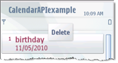
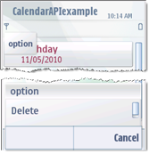

Hiding item-specific commands in submenus
This document describes the changes required to your application's code for hiding item-specific commands in submenus.
Steps
You can hide item-specific commands in submenus in either of the following ways:
Add the
EEikMenuItemSpecificflag to submenu resource definitions. As a result, the submenu items are displayed in the stylus pop-up menu at the same level as main menu items.RESOURCE MENU_PANE r_calendarapiexample_entries_menu_option { items = { MENU_ITEM { command = ECalendarAPIexampleOption; txt = qtn_options_option; cascade = r_calendarapiexample_entries_menu; // ----Add the following line----- flags = EEikMenuItemSpecific; //-------------------------------------- }, MENU_ITEM { command = ECalendarAPIexampleDeleteAll; txt = qtn_options_delet_all; } }; } RESOURCE MENU_PANE r_calendarapiexample_entries_menu { items = { MENU_ITEM { command = ECalendarAPIexampleCmdDelete; txt = qtn_options_delete;} }; }For example, the following illustrations show how the item-specific submenu item (Delete) is hidden in the options menu and displayed in the stylus pop-up menu by setting the
EEikMenuItemSpecificflag.
Figure: Before setting the EEikMenuItemSpecific flag
Figure: After setting the EEikMenuItemSpecific flag
OR
Add the
EEikMenuItemSpecificListQueryflag to submenu resource definitions. As a result, the submenu items are displayed in a list query dialog box within stylus pop-up menus.RESOURCE MENU_PANE r_calendarapiexample_entries_menu_option { items = { MENU_ITEM { command = ECalendarAPIexampleOption; txt = qtn_options_option; cascade = r_calendarapiexample_entries_menu; //----Add the following line---------- flags = EEikMenuItemSpecificListQuery; //--------------------------------------- }, MENU_ITEM { command = ECalendarAPIexampleDeleteAll; txt = qtn_options_delet_all; } }; }For example, the following illustration shows how the Delete command is displayed in the list query dialog box under option by setting the
EEikMenuItemSpecificListQueryflag.Figure: After setting the EEikMenuItemSpecificListQuery flag